Cority follows standard browser data entry conventions when it comes to entering text into fields, selecting from lists, and providing checkboxes to allow for on/off or yes/no type choices. You can also create a browser bookmark to many records for quick access.
Press Alt+S to save changes on a list or form, or click Save.
Text fields have a character count on the bottom right corner of the text box that shows the remaining characters allowed.
Use the Employee List form, which appears by default when you log in to Cority, to search for and select an employee record. The employee you select will be used for all modules that act on employee data until you select a new employee or clear the current selection. You will only be able to see the employee records for the health center(s) that you have security access to (unless this security is turned off in the system settings).
If the Employee List is not already open, click Demographicsin the My Favorites menu. The Employee List appears. Search the list as described in Filtering Records.
When the screen shows the desired employee, you have two choices:
To view or change this employee’s demographic information, click the employee’s name. This employee also becomes the Global employee.
To set this employee as the “Global employee” without opening the demographic record, click the icon to the left of the name. The icon becomes colored.
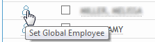
You can also select an employee directly in a module.
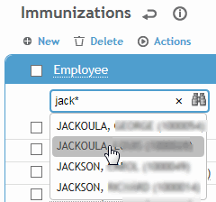
Depending on your system settings, you can quickly add a new employee directly in a module: click the binoculars to open the Employees look-up form, then clickNewto open the Employee Short Form. Enter the employee number (at a minimum) and optionally other basic personal and GDDFLO information, and click OK. You can retrieve the new employee record later in the Demographics module to complete other information.
About the Global Employee
The Global employee will be the default employee in any module you work in.
To change the global employee manually, clear the selection or set a different employee as the global employee.
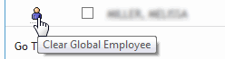
The global employee also is cleared when you press enter on an empty employee search field on a list screen.
The global employee will change automatically (if enabled in your system settings) in the following circumstances:
you select a different employee from any module list
you do a search on a main list screen and only one employee matches the search
you start a new record and select a different employee
you open a record that relates only to one employee, for example a Clinic Visit record.
Working with Forms
On all forms in the Cority application, required fields are shown with a yellow background. You cannot save a record without completing all of these fields.
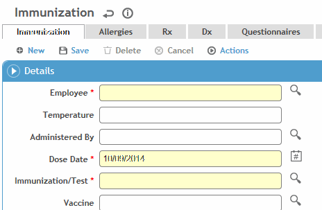
Some forms segregate data into multiple tabs which you navigate by clicking on the tab names at the top of the screen. If there are more than can fit on the screen, you will see a < or > button at each end of the tabs.
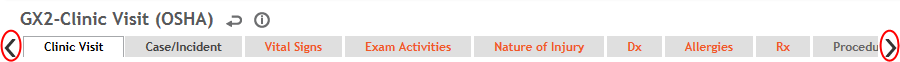
Data may also be presented in sections that you can show or hide by clicking the section headers. You can also drag a section to a new location on the form to change the order they appear in. To save your changes, choose Actions»Save Layout(for more information, see Changing Layouts).
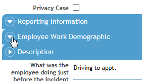
Choosing from Look-up Tables
Cority uses look-up tables to store information needed to populate lists. Some look-up tables will have been set up for you prior to Cority implementation at your site, and others must be set up by you or someone at your company. The look-up tables that must be set up before entering data are identified in each module’s chapter. For information about populating the look-up tables, see Look-Up Tables.
Within the forms, you will see some data fields with a look-up selector icon beside them . To enter data in these fields you can either type the correct data or use the icon to search the corresponding look-up table for the correct value. If the required value is not listed, click Create Newin the field or on the search screen; you will be taken to the corresponding table to add the value, then when you save and close/back, you will be returned to the form and the value will be populated in the field (if you created multiple values, the most recently created one is populated).
To enter data directly, begin typing in the field. As you type, Cority displays potential matches below the field. The first entry is highlighted. Press Tab or Enter to select the highlighted entry, or click on a match to populate the field.
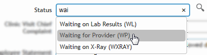
To use the look-up table, click the look-up icon. If there are more results than can be displayed on a page, use the arrows at the bottom to see any additional results.
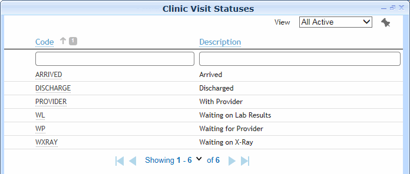
Sort your search results by clicking on the column heading. Alternatively, to shorten a long list of values, type partial data in the desired field and press enter.
Click the underlined text to insert that item in the data field.
Click the down arrow at the bottom of a list to change the number of records displayed on each page; to return to the default number, choose Reset.
Some forms allow for multiple selections from the look-up table (e.g. adding exam activities). If this is the case, the selector icon looks like . When you click the icon, all table values include a checkbox to the left. Select as many as required, then click Select.
If a look-up table includes fields for Geographic Location and/or Health Center, you will only be able to see the values for the location(s) or health center(s) that you have security access to. If a location or health center is already entered in a record, then the look-up table will be limited to the values assigned to that location or health center. If the “Pre-filter picklists by default Health Center” system setting is turned on, the picklist will display all look-up table values linked to that Health Center AND any value that is not linked to any Health Center.
Fields that reference the User table, e.g. a Practitioner field, may list the same user multiple times if they are linked to multiple health centers and/or geographic locations. If you have the appropriate permissions, you may create a custom view of the User picklist to exclude columns such as Health Center and Geographic Location, resulting in each user only being listed once. For information about customizing a view, see Creating a New View.
Choosing GDDLOFB Fields
GDDLOFB refers to the grouping of job/location-related demographic information (Geographic location, Department, Division, Location, Organization, Floor, Building). These are used throughout the Cority system.
All “GDDLOFB” fields refer to a node in an organizational hierarchy tree. To populate these fields, click the tree icon beside the field and navigate through the tree to pick the relevant node. (Tip: click the icon beside “Description” to toggle the sort order, or enter text in the Search field. The search field will look in both Code and Description for a node that contains the search parameter.) Alternatively, type at least three letters in the field to see all possible matches.
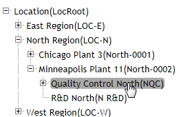
For fields that are already populated, when you click the icon beside the field, the tree expands to show the selected node, so that you can see where it fits in the hierarchy.
If defined in a customized TreeMasterCode (or TreeMasterCode with Attributes) look-up table, a node may be related to other nodes so that when it is selected, the related fields are automatically populated.
When you select a tree node in a report selection form, Cority will include all records that match that node as well as any nodes below the selected node.
Default values may be defined for any of the GDDLOFB fields in the System Settings (see Changing Your System Settings), or in a particular form layout. Default values in a layout take precedence over values set in the System Settings.
If your organization tree is flat (i.e. no hierarchy), you may choose to have the GDDLOFB fields presented as look-up tables rather than tree pickers to allow for searching. This is controlled in a system setting for each GDDLOFB field type.
Filtering Records
Many forms provide the ability to filter records according to criteria you specify. The most common filter method is used at the top of every list. Let’s call this “List Filtering”. Other areas of Cority allow you to specify criteria based on field values. We’ll call this “Query Filtering”.
List Filtering
You can search a list in several ways:
To search by a field that has a list of possibilities (e.g. employee type, geographic location, etc.), click . For more information, see Choosing from Look-up Tables.
To constrain the list to certain entries, enter partial data in any of the fields and press enter. For example, if you enter “dep” in the Employee Name field you will see a list of all employees whose last name includes “dep”. The more specific the data you enter, the shorter the list of possible matches will be.
You may also use the general wildcard characters of “*” and “_” to search, where * represents any group of characters, and the underscore “_” symbol represents any single character. For example entering “PETERS_N” into the employee name field will retrieve “PETERSON” and “PETERSEN”. The search “T*SON” will retrieve all names that start with “T” and end with “SON*, such as “THOMPSON”, “THOMSON”, “TRALASSON”, etc.
The results will be sorted by the field in which you entered data. For example, if you entered an “*” (for All data) or a full or partial name in the Employee Name field, the results will be sorted by name. To change the sort order of the data, click on the label in the column heading. For example, to sort by Employee No., click on the Employee No. label
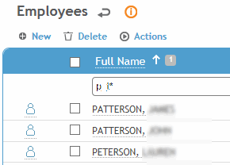
.
All main list screens include a global search field that you can use to search all of the text and integer fields on that screen. In the following example, “weld” is located in the Locationand Short Descriptionfields.
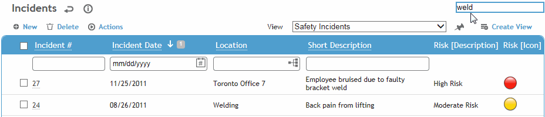
Query Filtering
Cority provides more advanced query filtering in several areas: for example, when creating a custom view of a form, using Reports or Report Writer queries, or when choosing the SEG whose participants must attend a course.
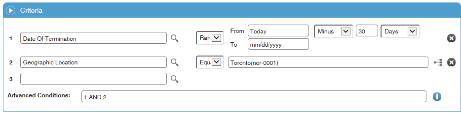
Click the look-up selector beside a criteria field and select the field you want to filter on. Then select the appropriate filter and the filter value.
Use the “Is Me” filter on an Employeeor Userfield to see only the records associated with you.
Date fields include relative date options such as today, next week, last month, etc. If you select Range, you can define a dynamic range where the beginning and the end are relative to the date that the query is run. For example, to view data from the past 30 days, the range would be FROM=Today minus 30 days TO=Today plus/minus 0 days. To find data that is between 1 and 2 weeks old, the range would be FROM=Today minus 2 weeks TO=Today minus 1 week. To view data for Q1, the range would be FROM=Jan 1 TO=Mar31.
Repeat to add more criteria fields as necessary.
By default, if you have selected the same field with different filters, they are treated as “OR” (while dissimilar fields are treated as “AND”). If you want both criteria statements to apply, enter a statement in the Advanced Conditions field referencing the number beside the criteria field.
In the example above, without the Advanced Condition statement the list would include all records where either statement is true, i.e. employees terminated in the last 30 days, as well as all employees in Toronto. Using the Advanced Condition statement forces both statements to be true, i.e. the list will only include Toronto employees terminated in the last 30 days.
Adding New Records
You can quickly add a record (e.g., to add another Alternate Address, or to add a value to a look-up table) without clicking Newto open another form. Click the to create a new row, and complete the fields as required, then click Save.
Note that in many cases, this shortcut does not provide as many field options as you would get by clicking New, but if needed you can open the full record later to complete the extra fields.
When you create a new record, depending on your system settings, you may be prompted to choose the layout to use.
Entering Dates
Date fields have a date selector icon at the right side of the field . To enter data in these fields you can type the date or use the button to choose from a calendar.
Click the date button to display a calendar.
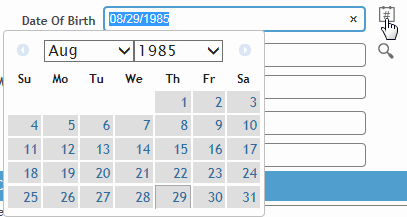
Click the arrows to move through the calendar month by month, or select a specific month or year.
Click on the date you want.
The date will be displayed in the format specified in your system settings (for more information, see Changing Your System Settings).
Common Buttons
The following common buttons are found on most forms; if a button is grey, it is not available (e.g. you can’t cancel if no changes were made, and you can’t delete a new record that has not yet been saved):
New
Clears the fields on the current form so you can create a new record. Depending on your system settings, you may be prompted to choose the layout to use.
Save
Saves the data entered and keeps the form open.
Delete
Deletes the current record. You are prompted to confirm the deletion.
Cancel
Cancels any changes or additions made and keeps the form open.
Actions specific to a form are listed when you click the Actionsbutton. If an action is shown in grey text, that action is not available--either because you have insufficient security access, or the state of the form does not yet permit this action (for example, you cannot unlock a record that has not been locked).
 . When you click the icon, all table values include a checkbox to the left. Select as many as required, then click Select.
. When you click the icon, all table values include a checkbox to the left. Select as many as required, then click Select.  beside the field, the tree expands to show the selected node, so that you can see where it fits in the hierarchy.
beside the field, the tree expands to show the selected node, so that you can see where it fits in the hierarchy. . For more information, see
. For more information, see  to create a new row, and complete the fields as required, then click
to create a new row, and complete the fields as required, then click